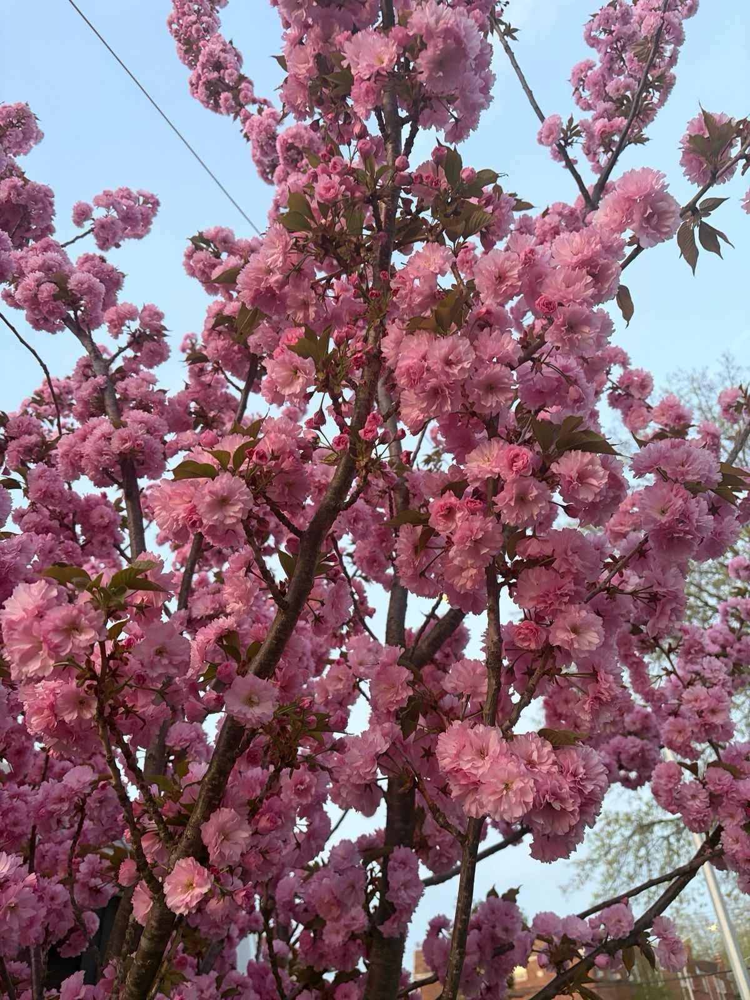

The Kwanzan Cherry Says It's Spring
Every year I tell myself I won't take fifty photos of the same cherry tree, and every year the tree wins. This is the Kwanzan on our street at full throttle — every branch packed with double pink pom-poms so dense you can barely find the bark.

Kwanzans are the overachievers of flowering cherries — each blossom is a double with twenty-plus petals, so the branches read as solid rope of pink. They bloom a couple of weeks after the wispy white Yoshinos, louder and less subtle, and I mean that as a compliment.
The show runs about two weeks. Then one windy afternoon the whole thing lets go at once and the sidewalk turns pink — drifts in the gutters, petals in everyone's hair, confetti stuck to car windshields like parking tickets from spring itself. People complain about the mess. Those people are wrong.
For the journal's records: first petals opened April 3 this year, peak hit around the 10th, and the great shedding started the 16th. Three days earlier than last year. The garden's calendar keeps better time than mine.